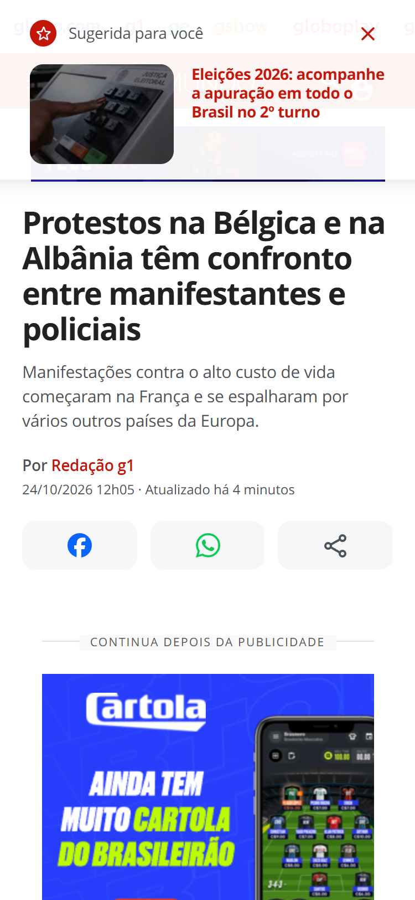
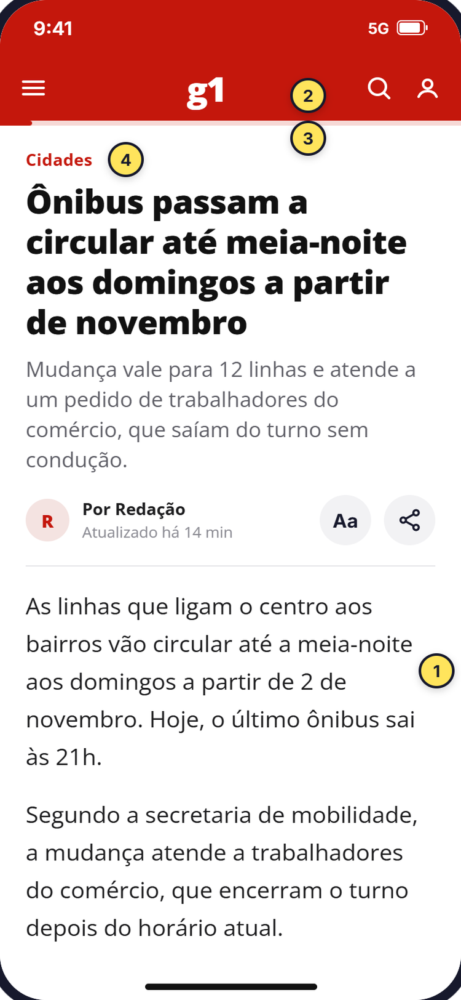
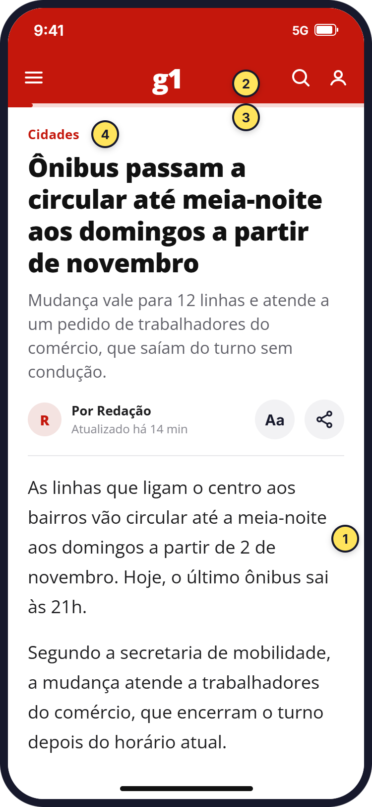
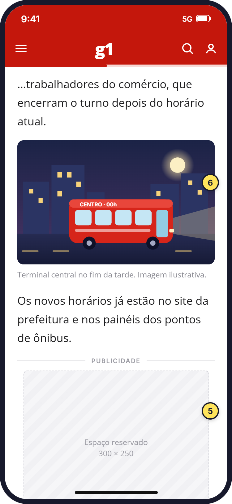
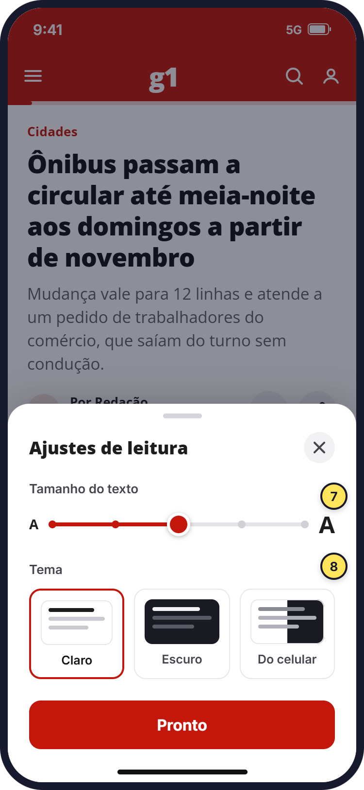

- O problema
- Ler uma notícia do g1 no celular é mais cansativo do que deveria, e quem desiste no meio não volta.
- O que eu descobri
- A quantidade de anúncios está dentro do limite do mercado. O que incomoda é o comportamento deles e o caminho longo até o texto começar.
- O que eu propus
- Uma tela de notícia que começa pelo texto, regras para o anúncio ficar no lugar dele e uma lista que não perde o ponto onde a pessoa parou.
Por que o g1
82% dos brasileiros leem notícias pelo celular. Em 2013 eram 23%. Só o app do g1 soma mais de 120 mil avaliações nas lojas, então um problema pequeno na leitura se repete muitas vezes por dia.
Escolhi uma tarefa só para estudar: abrir uma notícia e ler até o fim.
Fase 1: medir antes de opinar
Minha hipótese inicial era simples: "o g1 tem anúncio demais". Antes de desenhar qualquer coisa, decidi medir.
Abri 13 notícias no tamanho de um iPhone, em três sites, e medi três coisas: quanto a pessoa rola até o primeiro parágrafo, quantos anúncios aparecem no meio do texto e quanto da página é anúncio. Para o último ponto, usei o limite do mercado: no celular, anúncio não deve passar de 30% da altura do conteúdo.
| Site | Notícias | Telas até o 1º parágrafo | Anúncios no meio do texto | Área de anúncio na página |
|---|---|---|---|---|
| g1 | 5 | 1,4 (de 1,1 a 2,0) | 4,8 | 16% |
| UOL | 3 | 1,1 | 4,7 | 16% |
| CNN Brasil | 5 | 1,1 | 1,8 | 7% |
Medição feita em 24/10/2026, sem login, na editoria internacional. A Folha ficou de fora porque as notícias estavam bloqueadas para não assinantes.
A hipótese caiu. Com 16% da página em anúncios, o g1 fica bem abaixo do limite de 30% e igual ao UOL. O que o diferencia é o começo da página: o texto começa, em média, depois de 1,4 tela de rolagem.
O que fica entre a pessoa e o texto

- Cartão por cima do topo. Ao abrir a notícia, "Sugerida para você" cobre o cabeçalho. Nas 5 notícias que abri, sugeria a mesma matéria, de outro assunto.
- Duas barras antes do conteúdo. A faixa de produtos da Globo fica acima da barra do g1.
- Foto e anúncio antes do texto. Depois da linha fina vêm os botões, uma foto do tamanho da tela e um anúncio.
- Cookies sem escolha. O aviso ocupa cerca de 19% da tela, só tem o botão "Prosseguir" e aparece quando a pessoa começa a rolar.
Fiz essa leitura com as 10 heurísticas de usabilidade de Jakob Nielsen. Também anotei o que funciona: a linha fina resume bem a notícia na primeira tela, e o WhatsApp em destaque no compartilhamento combina com a forma como o brasileiro compartilha.
Fase 2: ouvir quem lê
Medir mostra o que acontece, mas não o que incomoda. Como não tinha como fazer entrevistas, fui atrás de leitores que já tinham falado: as avaliações públicas do app g1.
Coletei as 819 avaliações com texto dos últimos 12 meses, na Google Play e na App Store. As 192 negativas foram lidas uma a uma e separadas por assunto.
| Assunto | Avaliações negativas | É problema de design? |
|---|---|---|
| App fecha, trava ou não abre | 53 (28%) | Não, é de engenharia |
| Linha editorial e política | 36 (19%) | Não, é de jornalismo |
| Anúncios que interrompem a leitura | 25 (13%) | Sim |
| Jogos (Soletra, Combinado) | 15 (8%) | Fora do escopo |
| Volta ao início e perde onde estava | 11 (6%) | Sim |
| Tamanho de letra e contraste | 7 (4%) | Sim |
Os três temas de design têm a mesma raiz: a pessoa não consegue ler até o fim.
O achado que conecta as duas fases
Se a quantidade de anúncios está dentro do limite, por que tanta gente reclama? As avaliações respondem: o problema não é quantos anúncios existem, é o que eles fazem. As pessoas descrevem anúncios que:
- abrem sozinhos enquanto elas só rolam a tela;
- ficam por cima do texto;
- redirecionam para sites de apostas;
- param a música que estava tocando.
Sobre perder o lugar, uma pessoa resumiu: "tenho que rolar todas as notícias já visualizadas para continuar lendo… aí desisto de ler".
O desafio
Como ajudar a pessoa a ler a notícia até o fim no celular, sem tirar os anúncios que pagam o jornalismo?
A restrição importa. Uma proposta que simplesmente remove anúncios é fácil de desenhar e impossível de aprovar.
O redesenho
Primeiro, a comparação direta. Arraste a barra para ver a mesma tela antes e depois.

- HojeO texto começa depois de 1,4 tela de rolagem, em média. Antes dele vêm um cartão por cima do topo, duas barras de menu, botões, foto e anúncio.
- PropostaTítulo, linha fina e o primeiro parágrafo cabem na primeira tela. Nada fica por cima do conteúdo.
Depois, o fluxo completo em quatro telas, todas com conteúdo fictício para não inventar fatos sobre notícias reais. Os números amarelos se referem às decisões listadas abaixo das telas.

A. Primeira telaO texto começa sem rolar.

B. RolandoAnúncio no lugar dele.

C. Ajustes de leituraLetra e tema a um toque.

D. De volta à listaNo mesmo ponto onde parou.
As decisões
- O texto começa na primeira tela. Título, linha fina e primeiro parágrafo cabem nos primeiros 812 px.
- Uma barra só. A faixa de produtos da Globo vai para dentro do menu. São quase 50 px a mais para o texto.
- Linha de progresso. Mostra quanto falta para terminar e ajuda a decidir continuar.
- Nada por cima do topo. Sugestões de outras matérias vão para o fim do texto.
- Anúncio no lugar dele. Espaço com altura reservada e rótulo "Publicidade". Não cobre o texto e não empurra o parágrafo quando carrega.
- A foto espera a leitura começar. Ela vem depois dos primeiros parágrafos.
- Aa ao lado do autor. O ajuste de letra fica a um toque, como pedem as avaliações.
- Tema escolhido pela pessoa. Claro, escuro ou igual ao celular.
- Volta para o mesmo ponto. Ao sair da notícia, a lista abre onde a pessoa estava.
- O que foi lido fica marcado. A etiqueta "Lida" e o aviso com "Ir para o topo" mostram onde a pessoa está.
Regras para anúncios na leitura
- Nunca por cima do texto.
- Altura reservada antes de carregar, para o texto não pular.
- Nada abre ou redireciona sem um toque da pessoa.
- Propaganda em vídeo começa sem som e não pausa o áudio do celular.
- A quantidade de espaços continua a de hoje. Muda o comportamento, não a receita.
Como usei IA
Usei o Claude como assistente para automatizar a medição dos sites.
Como eu validaria
O próximo passo é testar o protótipo com cinco pessoas que leem notícia no celular toda semana. Cada uma leria a mesma notícia na versão atual e na nova.
- Até onde a pessoa lê: quantas chegam ao último parágrafo em cada versão.
- Quanto tempo leva para começar: os segundos até o primeiro parágrafo aparecer na tela.
- Percepção do anúncio: se a pessoa lembra de algum anúncio ter atrapalhado.
Limites do estudo
- Medição de um dia só. Os anúncios mudam a cada visita.
- Avaliações de loja não representam a média dos leitores. Quem escreve costuma estar muito satisfeito ou muito irritado.
- App e site são produtos diferentes. As avaliações são do app e a medição foi do site no celular. Os problemas de leitura se repetem nos dois, mas não são idênticos.
O que aprendi
A medição derrubou a hipótese que eu tinha certeza que estava certa. Se eu tivesse desenhado direto, teria proposto "menos anúncios", que é a solução mais óbvia e a menos viável.
Juntar números com a fala das pessoas mostrou o que nenhum dos dois mostraria sozinho: o leitor aceita o anúncio que fica no lugar dele, e o que ele não aceita é ser interrompido.
Fontes: Digital News Report 2025, Reuters Institute (via Jornal Opção); critério de densidade de anúncios da Coalition for Better Ads (via Google); avaliações públicas do app g1 na Google Play e na App Store, de 24/10/2025 a 23/10/2026.